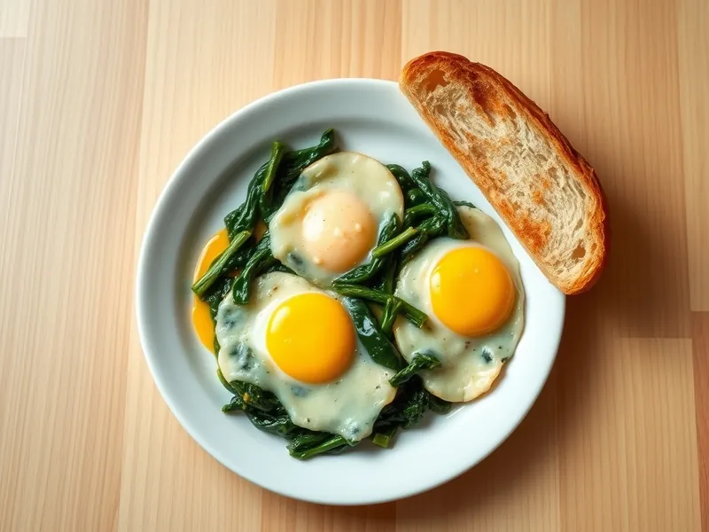

Фото: Иллюстрация ИИ, Cloudflare Workers AI
Яйца со шпинатом и сыром в духовке
Яйца, запечённые на шпинате в сливках под сыром
25 мин2 порц.576 ккал на порциюБ 30 · Ж 37 · У 29Европейская кухня
Открыть в приложении: порции, таймеры, список покупок
Продукты на 2 порц.
- Шпинат300 г
- Яйцо куриное4 шт
- Сливки 20%100 мл
- Сыр твёрдый50 г
- Чеснок1 зуб.
- Сливочное масло15 г
- Мускатный орех по желанию1 щеп.
- Соль1 ч. л.
- Перец чёрный молотыйпо вкусу
- Хлеб белый3 шт
Как готовить
- Включите духовку на 200 °C (сильный жар). Чеснок измельчите, сыр натрите, на это уйдёт 3 минуты.
- Растопите масло в сковороде на среднем огне, обжарьте чеснок 30 секунд, положите шпинат и прогревайте 3-4 минуты, пока он не опадёт и не уйдёт лишняя влага.
- Влейте сливки, добавьте соль, перец и мускатный орех и тушите 2 минуты до лёгкой густоты.
- Переложите шпинат в форму, сделайте ложкой 4 углубления и разбейте в них яйца.
- Посыпьте сыром и запекайте при 200 °C (сильный жар) 8-10 минут, пока белок не станет белым и плотным, а желток останется мягким.
- Подавайте сразу с поджаренным хлебом.
Совет. Подойдёт и замороженный шпинат: разморозьте его и хорошо отожмите, иначе под яйцами будет вода.